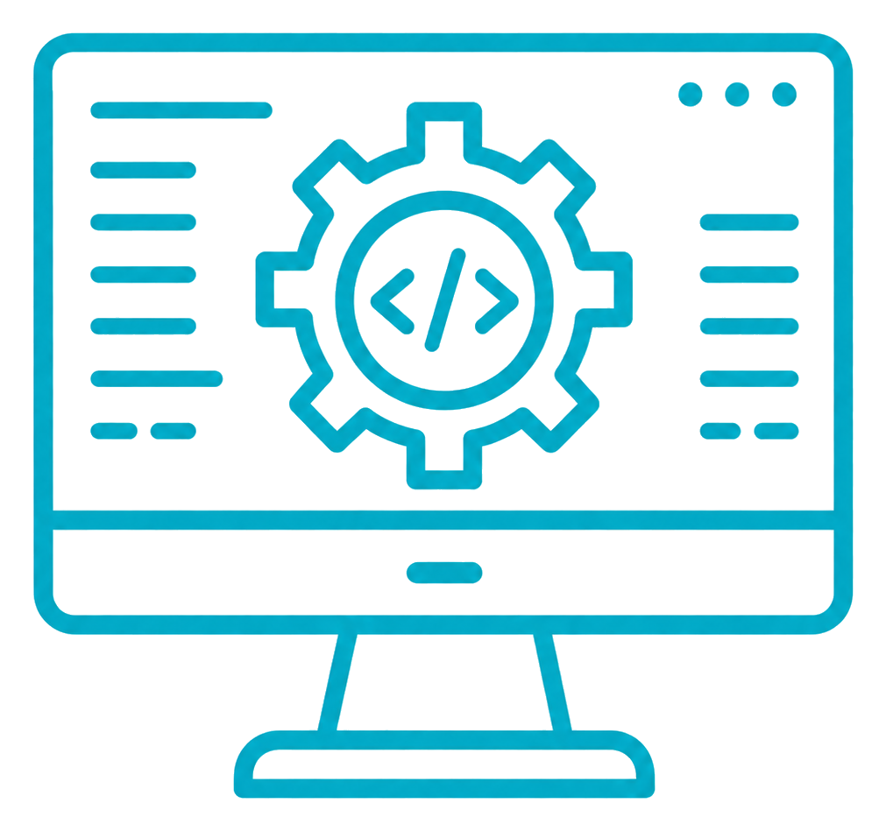
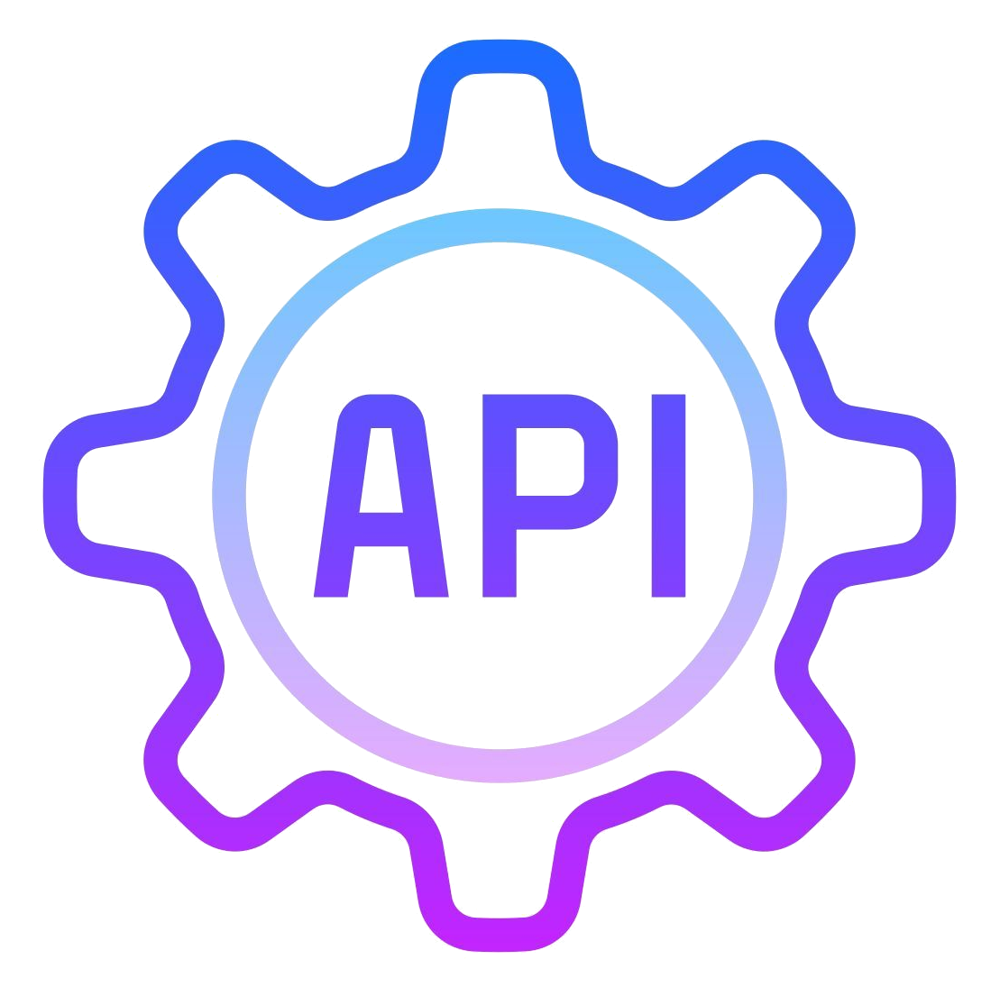
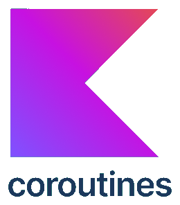

Hi, I'm
Oleksandr Vasylchuk
Mobile App Developer
Crafting exceptional mobile experiences with Kotlin, Kotlin Multiplatform, and Java
Prosto TV ecosystem
OTT/IPTV/VOD products for Smart TV and mobile experiences.
OTT/IPTV/VOD
Streaming
TV + Mobile
Platforms
5 Apps
Ecosystem
Mobile
Player
Subscriptions
Technical Expertise
Specialized in modern mobile development technologies
Core Technologies
Kotlin Multiplatform
Cross-Platform
90%
Kotlin Multiplatform
90% Proficiency
Expert Level
Shared mobile architecture
iOS via KMP
iOS
90%
iOS via KMP
90% Proficiency
Expert Level
KMP-based iOS delivery
Kotlin
Android
95%
Kotlin
95% Proficiency
Expert Level
Production Android
Java
Android
100%
Java
100% Proficiency
Expert Level
Legacy and production codebases
Android Jetpack
Mobile
95%
Android Jetpack
95% Proficiency
Expert Level
Modern app foundations
Specialized Skills
Firebase & Google APIs
95%
CI/CD
90%

Clean Architecture / MVVM / MVI
100%
Store & Market Growth
95%
REST APIs
95%

HLS/DASH/VOD Playback
100%
TV / Tablet & Adaptive UI
90%
Coroutines & Flow
90%

Payments & Subscriptions
90%
Featured Apps
Prosto Player
FeaturedAndroid media player for IPTV, radio, VOD, subscriptions, and playback-heavy user flows.
JavaAndroidMedia
Публічні Новини
NewsKotlin Multiplatform news product with modular content sections and fast daily browsing.
KMPComposeContent
BeautyApp
BeautyKotlin Multiplatform beauty app with camera-enabled flows and care-focused product logic.
KMPCameraCare
Pizza MA
Food Open GITMobile ordering experience for pizza browsing, product details, and a focused checkout path.
KMPOrderingCatalog
Classic Games
GamesRetro mobile game collection with tic-tac-toe, classic snake, and Battle City-style tanks from the 1990 era.
Tic-Tac-ToeSnakeTanks 1990
Prosto Player
Акцент на відтворенні IPTV/VOD, радіо, плейлистах, підписках і сценаріях, де важливі стабільність playback, PiP та швидкий доступ до контенту.
Головне — одразу
Новинний застосунок відкривається зі стрічки актуальних матеріалів і швидких категорій. Користувач бачить заголовок, медіа, короткий опис і може перейти до повного матеріалу. Доступні прямі трансляції, радіо, налаштування та пошук.
Beauty routine у фокусі
BeautyApp показує доглядові сценарії, має сканер beauty товарів і персональні кроки користувача на основі AI. Інтерфейс тримає увагу на стані шкіри, рекомендаціях і зрозумілому переході між модулями.
Плавність анімацій - залог успіху
Піццовий застосунок веде користувача від каталогу до вибору позицій і оформлення. Основний акцент — швидкодія додатку, анімації, зрозумілі деталі продукту та простий шлях до замовлення.
Класичні ігри
Простий мобільний набір аркад: хрестики-нулики для швидких партій, класична змійка з рахунком і танчики у стилі Battle City 1990 з піксельною картою, ворогами та екранними контролами.
Development Process
A systematic approach to building exceptional mobile applications
Ideation & Planning
- 1Requirements gathering and market research
- 2User flow and wireframe design
- 3Interactive prototype development
Development
- 1Architecture setup and tech stack selection
- 2Agile development with regular sprints
- 3Continuous testing and code reviews
Launch & Growth
- 1Store/market optimization and submission
- 2Analytics integration and monitoring
- 3Regular updates and feature enhancements
AI Agent Fluency
Proficient with modern AI coding agents as part of a senior engineering workflow
AI-assisted delivery
Codex, Claude, and Gemini in real production work
I use AI agents to accelerate implementation, investigate unfamiliar code, compare solutions, and tighten quality without replacing engineering judgment.
Code navigation
Architecture review
Test strategy
Refactoring support
Let's Create Amazing Mobile Experiences
Ready to bring your mobile app idea to life? I specialize in creating polished, user-friendly mobile applications that deliver exceptional experiences.
Ukraine / Worldwide
View Resume